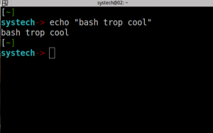

Prélude
Qu'est-ce que le shell bash ?
Toutes les distributions GNU/LINUX de nos jours, utilisent des environnement graphiques sophistiqués, facilitant l'usage du système d'exploitation pour l'utilisateur. Ainsi, toutes les tâches quotidiennes deviennent aisées à réaliser sans mettre véritablement les mains dans le cambouis. Imaginons par exemple qu'un utilisateur souhaite copier un fichier dans un autre dossier que celui dans lequel il se trouve actuellement. Pour se faire il suffira qu’il le sélectionne à l’aide de sa souris, qu’il clique du droit sur ce fichier, sélectionnera copier puis ira dans l’arborescence choisie pour aller le coller. Ainsi, c’est l’abstraction totale des instructions en console qui est permise par l’interface graphique (GUI en anglais pour Graphical User Interface). Mais, dès lors qu’un utilisateur souhaitera utiliser, manipuler des fonctions complexes inhérentes au système d’exploitation, il ne pourra recourir qu’à de rares occasions à l’utilisation de l’interface graphique, l’utilisation de la ligne de commande (dans un jargon plus informatique on parlera de CLI pour Command Line Interface) s’imposera d’elle-même. C’est la raison de ce tutoriel, vous expliquer en détails (du moins j’essayerai) le fonctionnement de l’interpréteur de commandes (appelé couramment shell) Bash, qui deviendra un allié puissant pour intéragir avec le noyau du système (encore une fois dans un jargon plus informatique le noyau est dit le kernel soit le coeur de votre système d’exploitation). En résumé, le shell est la coquille du noyau, permettant de dialoguer directement avec lui, en lui soumettant des commandes, des instructions précises à exécuter. Avant de commencer, il faut savoir que ce tutoriel se dédie spécifiquement au shell Bash, car oui en réalité pléthore de shells sont disponibles pour intérargir avec votre système, disposant chacun de caractéristiques propres mais qui dans l’ensemble adoptent une logique similaire. Voici quelques autres coquilles, shells utilisables sous un système GNU/Linux :
- sh : créé par Ken Thompson en 1971 qui marque le premier shell disponible sur tous les systèmes Unix (à ne pas confondre avec Linux)
- sh : Bourne Shell remplaçant le shell de Ken Thompson
- bash : Bourne Again Shell l'objet de notre étude
- ksh : Korn Shell
- csh : C Shell
- zsh : Z Shell
- [...] et bien d'autres encore
Si j’ai opté pour vous expliquer le shell Bash, c’est tout simplement par soucis d’usage courant : en effet, ce shell est sur la plupart des distributions GNU/Linux le shell par défaut. En fait, le bash est le substrat du shell sh (le Bourne Shell, le deuxième élément de notre liste ci-dessus), agrémentés de fonctionnalités empruntés à ksh et csh. Pour information, le bash n’est pas uniquement présent ou utilisable que sur les distributions GNU/Linux mais aussi il sera efficient sur MacOS ainsi que Windows. On dira alors que bash est multi-plateforme. Les shells et ce en totale abstraction de leur type (que ce soit bash, ksh …) vont être exploitables au sein d’un terminal, comprenons par là une machine ne comportant que le strict nécessaire pour interpréter des instructions saisies par l’intermédiaire du clavier (périphérique dit d’entrée ou en anglais input device), et d’en visualiser les résultats sur une sortie écran (périphérique de sortie ou en anglais output device). Pour les curieux, aujourd’hui nous distinguons deux types de terminaux : les vrais, ceux ayant une réalité physique (en somme de vrais périphériques, matériels) et des pseudo terminaux, reposant sur des programmes simulant le fonctionnement des terminaux physiques. Ainsi, sous une distribution GNU/Linux vous trouverez des consoles virtuelles textuelles (par exemple si votre distribution n’incorpore pas d’environnement graphique, votre système d’exploitation démarerra sur cette console virtuelle), et des consoles graphiques (xterm, eterm ou konsole) qui sont des émulateurs s’utilisant par l’intermédiaire d’un environnement graphique (présence de fenêtres/composants graphiques). Une dernière chose, avant de commencer notre périple, comme je l’ai dis précédemment, le shell est toujours en attente d’instructions saisies par l’intermédiaire de votre clavier pour en afficher les résultats sur votre périphérique de sortie, l’écran, il faudra néanmoins apprendre à parler le langage du shell sans quoi, le noyau (kernel) ne saurait interpréter votre requête et n’affichera dès lors qu’une série d’erreurs à l’écran. Donc nous allons apprendre le langage qui vous permettra d’utiliser le shell et de dialoguer correctement avec votre noyau sans être insulter par des erreurs incessantes.
Quand le shell nous invite chez lui
Comme nous l’avons explicité précédemment, le shell est toujours en proie à des discussions nouvelles avec l’utilisateur, attendant des saisies de ce-dernier par son clavier. Dans un jargon plus informatique nous qualifions souvent le shell d’invite de commande (prompt en anglais). Ainsi, dès que vous ouvrez un terminal, vous pouvez voir un petit curseur clignotant, matérialisant votre saisie. Ne vous inquiétez pas si votre shell n’a pas exactement la même apparence que le mien, je l’ai modifié afin qu’il affiche uniquement les informations dont j’ai besoin. Nous apprendrons par ailleurs plus loin comment le personnaliser à sa libre convenance. Bon, théoriquement votre terminal une fois ouvert vous affiche une ligne de ce genre :

Ne vous inquiétez pas si votre shell n’a pas exactement la même apparence que le mien, je l’ai modifié afin qu’il affiche uniquement les informations dont j’ai besoin. Nous apprendrons par ailleurs plus loin comment le personnaliser à sa libre convenance. Bon, théoriquement votre terminal une fois ouvert vous affiche une ligne de ce genre :
antoine@learntux:/home/Desktop>
Cette ligne vous donne plusieurs informations, la première l’utilisateur utilisant actuellement le terminal, c’est l’information la plus à gauche (ici l’utilisateur est antoine que j’ai surligné en rouge), ensuite le fameux « @ » signifiant tout simplement chez (pour information le @ provient du mot anglais « at »), puis apparaît le nom d’hôte (hostname en anglais) soit le nom de la machine utilisée (ici la machine s’appelle learntux que j’ai surligné en bleu), puis vient s’ajouter la ligne /home/Desktop qui symbolise le chemin où vous trouvez actuellement (ici mon terminal est ouvert dans le dossier Desktop qui est lui-même contenu dans le dossier home). Donc traduisons maintenant tout ce que je vous ai expliqué en français : un utilisateur antoine utilise sa machine portant le nom de learntux et est entrain de manipuler le terminal actuellement ouvert dans le dossier Desktop (je n’ai pas expliqué le symbole. Mais .. qu’est-ce que ce dernier symbole > ? C’est très simple, c’est ce que l’on appelle la terminaison standard du bash qui est inhérente à tout utilisateur lambda (autrement dit l’utilisateur ici antoine est un vulgaire gueux qui n’a d’autorité, de droits spécifiques sur la machine, il est limité sur sa propre machine).
- $ indiquant encore une fois que l’utilisateur est un vulgaire gueux n’ayant pas des droits particuliers sur la machine
- # indique quant à lui que l’utilisateur est à son apogée sociale, c’est le root (administrateur) de la machine, disposant de droits exclusifs sur sa machine, lui conférant sens du contrôle et maîtrise en son art. Il faudra toujours veiller à n’utiliser ce compte que lorsque cela est véritablement nécessaire (pour maximiser ainsi la sécurité de son système d’exploitation).
Un autre caractère spécifique est à connaître mais celui-ci n’ayant plus de rapport avec l’utilisateur mais avec l’emplacement où vous vous trouvez:
- ~ le caractère tilde (pour le faire ALT Gr + 2) indiquant que vous vous trouvez dans votre répertoire personnel (/home/nomutilisateur par exemple le ~ pour notre utilisateur antoine de tout à l’heure est équivalent à /home/antoine)
Expérimentation concrète
Je vous propose maintenant d’expérimenter concrètement et de vous confronter à cette fameuse bête noire : le terminal. Alors, je vais partir du principe que vous utilisez une distribution GNU/Linux dite « User-Friendly » c’est à dire facile pour l’utilisateur et répandue d’une manière courante chez les utilisateurs non professionnels. Ainsi, si vous utilisez Ubuntu, ou l’une de ses variantes (xubuntu, kubuntu, lubuntu …) la procédure sera la suivante :
- Utiliser le raccourci CTRL+ALT+T qui théoriquement ouvrira un terminal à l’écran
- Presser la touche ALT+F2 et écrire : xfce4-terminal si votre distribution est xubuntu puis valider, konsole si vous utiliser Kubuntu, lxde-terminal si votre distribution est Lubuntu
- Parcourir le menu général de votre distribution GNU/Linux et trouver l’un des mots suivants : console / konsole / terminal
Voilà, normalement au moment où vous lisez ces lignes, une fenêtre sombre et mystérieuse est apparue à l’écran. Mise en garde, si vous choisissez de continuer la lecture de ce tutoriel, vous ne pourrez plus jamais continuer d’utiliser votre système GNU/Linux uniquement par l’intermédiaire de votre environnement graphique, la console deviendra votre meilleur ami. Bon je vous propose dès maintenant de dialoguer avec votre ami, car effectivement le bash est un langage interprété et non compilé, autrement dit directement compris au sein d’un interpréteur (shell bash) utilisable dans la console à l’écran. Ainsi, à la grande différence des langages compilés (à l’instar du C, Java …), il n’y a pas une étape intermédiaire demandant de retranscrire le code en langage binaire (on parle d’absence de compilation). Essayer par exemple de taper la commande suivante et valider par la touche <Entrée> :
$ echo "Le bash trop cool"
Le résultat suivant apparaît dès lors à la console :
